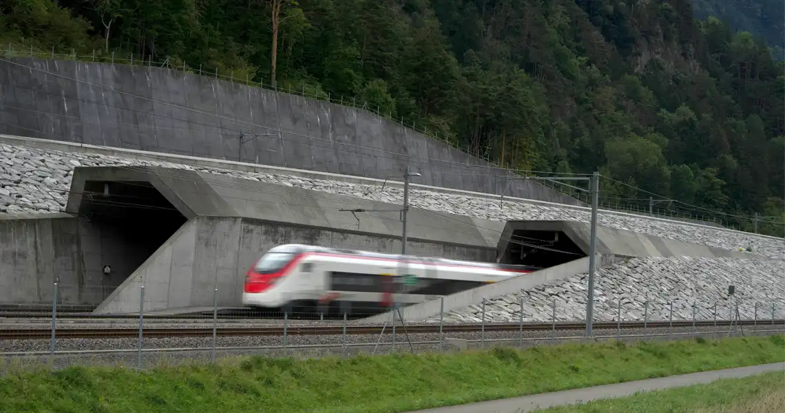

What is Civil Engineering?

Great Pyramid of Giza, 2600 BC

Roman aqueduct of Segovia, or Acueducto de Segovia. Segovia, Spain

Appian Way, 312 BC

Desert road, Arizona, Photo: Matt Howard on Unsplash

Akashi-kaikyo Bridge, main-span 1,991 metres

Gotthard Base Tunnel in Switzerland, a railway tunnel stretching 57km

Hoover Dam

London-city Airport

Railway Junction in Chicago

Main Canal of the Central Route of the South-to-North Water Diversion Project in Shijiazhuang City, Hebei Province, China

Moscow Kuryanovo wastewater plant

Burj Khalifa, a total height of 829.8 m
Civil Engineering
is the profession focused on the design, construction, operation, and maintenance of the built and natural environment that society relies on.
- Public works: roads, bridges, tunnels, dams, airports, railways, water and wastewater systems
- Main objectives: safety, serviceability, resilience, sustainability, and value for money
- Civil engineers turn science and mathematics into practical systems for communities
What is infrastructure?
Infrastructure is the network of facilities and systems that allows society and the economy to function.
- Hard infrastructure: transport, energy, water, drainage, communications networks
- Soft infrastructure: institutions and services supporting social and economic activity
Sub-disciplines in Civil Engineering
- Structural engineering
- Water resources and hydraulics
- Environmental engineering
- Geotechnical engineering
- Transportation engineering
- Construction engineering and management
- Surveying and geomatics
Careers in Structural Engineering
- Structural Designers
- Construction Site Engineers
- Structural Maintenance Engineers
- Forensic Structural Engineers
Careers in Water Engineering
- Water planning and hydrology
- Hydraulics and flood systems
- Treatment and utility operations
- Environmental protection and compliance
Careers in Geotechnical Engineering
- Site investigation and ground characterization
- Design of foundations and earth structures
- Underground and infrastructure geotechnics
Careers in Transportation Engineering
- Transport planning and policy
- Traffic operations and safety
- Highway and pavement engineering
- Rail and transit systems
- Airport and airside infrastructure